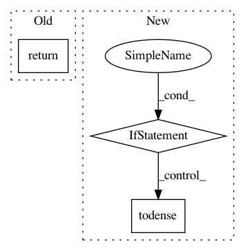

e6666a3fd4a05f439bb8555c926c513bc1b29639,scipy/sparse/base.py,spmatrix,__numpy_ufunc__,#spmatrix#Any#Any#Any#Any#,754
Before Change
return self.__add__(*without_self)
elif func is np.dot:
if pos == 0:
return self.__mul__(inputs[1])
else:
return self.__rmul__(inputs[0])
elif func is np.subtract:
if pos == 0:
After Change
else:
return NotImplemented
if out is not None:
if not isinstance(out, spmatrix) and isinstance(result, spmatrix):
out[...] = result.todense()
else:
out[...] = result
result = out
return result
def isspmatrix(x):
In pattern: SUPERPATTERN
Frequency: 3
Non-data size: 3
Instances
Project Name: scipy/scipy
Commit Name: e6666a3fd4a05f439bb8555c926c513bc1b29639
Time: 2013-10-11
Author: pav@iki.fi
File Name: scipy/sparse/base.py
Class Name: spmatrix
Method Name: __numpy_ufunc__
Project Name: WZBSocialScienceCenter/tmtoolkit
Commit Name: ac854505ebcc1ba7992ed4e070f51c3b8be2e69c
Time: 2019-05-03
Author: markus.konrad@wzb.eu
File Name: tmtoolkit/preprocess/_tmpreproc.py
Class Name: TMPreproc
Method Name: get_dtm
Project Name: ClimbsRocks/auto_ml
Commit Name: 3f74cd386abdc18a4b0b48160686f9654fb22bc1
Time: 2016-12-01
Author: ClimbsBytes@gmail.com
File Name: auto_ml/utils_model_training.py
Class Name: FinalModelATC
Method Name: predict_proba